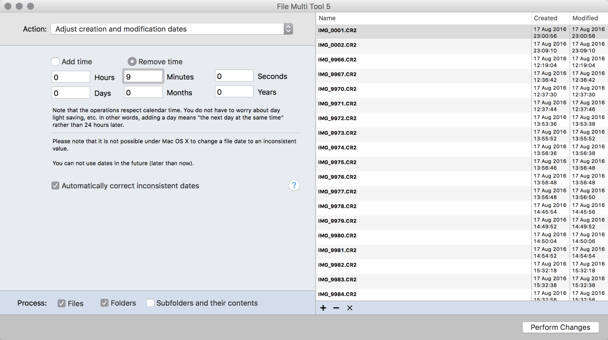
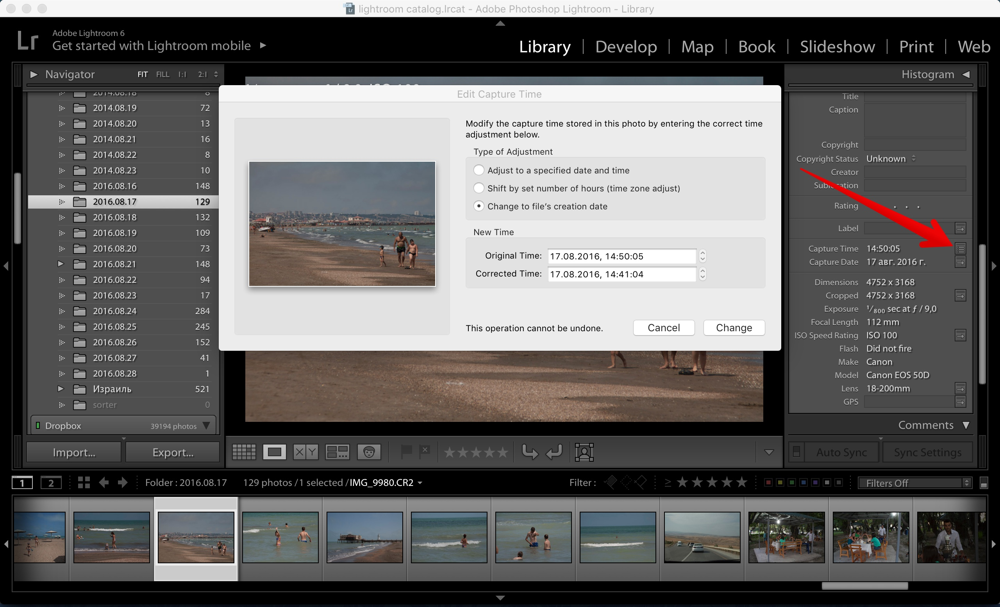

Понятно, что смартфоны шагают по планете, и большинство фотографий делается сегодня на них, на них же и смотрится. Та же ситуация и с видео. Но, уверен, где-то в подвалах до сих пор скрываются люди, которые кроме смартфонов берут с собой в путешествия обычные цифровые фотоаппараты и видеокамеры.
Если у вас хотя бы два таких устройства, то самым правильным решением будет с самого начала настроить на них одинаковую дату и время. Тогда, по возвращении домой, вы будете молча смотреть с гостями тысячи фоток, а не объяснять им почему вы сначала пили грузинское вино, а потом отправились кататься по горам на машинах.
Но советовать хорошо, а самому делать сложнее. Разбирая фотки с нашей IV этнографической экспедиции «Человек из Кемерова» я понял, что часы на фотоаппарате спешили на 9 минут, а время на GoPro отставало на 3 часа. В ленте Лайтрума, в котором я каталогизирую изображения, полный бардак и непонимание.
К счастью, существует софт, который может изменить дату создания файлов в несколько кликов.
Как изменить дату файла
С изменением атрибутов файла отлично справляется программа со скромным названием A Better Finder Attributes. Когда я покупал её, она называлась ещё File Multi Tool, но смысл, кажется, не поменялся.
Я выбираю все файлы, созданные GoPro, перетаскиваю их в окно программы и устанавливаю необходимую величину коррекции.
Нажимаю кнопку «Выполнить изменения». Потом повторяю ту же самую процедуру с файлами с фотоаппарата.

Возвращаемся в Lightroom и… ничего не изменилось.
Как изменить дату в Lightroom
Дело в том, что изображения уже были добавлены ранее в каталог Lightroom с неверной датой, и теперь нам необходимо обновить метаданные в самом каталоге. Делается это довольно просто.
В режиме библиотеки выберите файлы, в которых вы хотели бы обновить метаданные и нажмите на кнопку рядом с временем создания файла. Затем отметьте пункт «Изменить на дату создания файла».
Как видно, если у вас нет необходимости коррекции минут, и будет достаточно откорректировать только время в каталоге Lightroom, то можно выбрать второй пункт и пропустить первую часть поста.

Операцию можно сделать сразу с несколькими файлами, время обновится корректно для всех.